📈 李翔专访王宁：200%增长的2025年，却是最痛苦的一年
Li Xiang interviews Wang Ning: The 200% growth year of 2025 was the most painful

2026年5月李翔详谈专访泡泡玛特王宁的内容分享。
2025年，泡泡玛特实现了爆发式增长，LABUBU成为全球顶流IP，外界眼中满是高光与传奇legend[ˈledʒənd] n. 传奇。
但对于王宁来说，这个过程无比艰难和高压stress[stres] n. 高压；压力。
前段时间，《详谈》系列作者author[ˈɔːθər] n. 作者李翔与王宁再次进行了一次长谈。
在这场对谈里，王宁毫无保留地袒露reveal[rɪˈviːl] v. 袒露；揭示了高速增长背后的真实体感：
，这一年是团队最痛苦agony[ˈæɡəni] n. 痛苦、压力最大的一年，经营业绩能打95分，组织管理却只给自己打70分。
的认知颠覆disrupt[dɪsˈrʌpt] v. 颠覆，全球化从0到1的兴奋到对齐标准的阵痛，顶流IP爆火后主动
的反常识操作，对AI时代线下核心价值的坚守，王宁撕开了网红企业的流量表象，完整展现了一位创始人在极速狂奔中的清醒、焦虑anxiety[æŋˈzaɪəti] n. 焦虑与长期主义思考。
以下为访谈全文整理compile[kəmˈpaɪl] v. 整理，希望对你有所帮助。
高速增长下的压力与极限limit[ˈlɪmɪt] n. 极限测试
我最近常和团队说，现在的状态就像一个刚学会开车的人，突然sudden[ˈsʌdn] adj. 突然的被拉去开F1。
平时日常开车，你可以听听音乐、看看风景，很放松relax[rɪˈlæks] v. 放松；但开F1，只有外人觉得你很爽，实际上你需要全程全神贯注，精神高度紧绷tense[tens] adj. 紧绷的。
更关键的是，在你以超快速度行驶的时候，能清晰地感觉到这辆车存在很多问题，小到零部件的各种瑕疵flaw[flɔː] n. 瑕疵，都能直观感受到。
这个过程里压力非常大，还绝对不能犯错，一个小小的失误，就可能带来非常严重的后果consequence[ˈkɑːnsɪkwens] n. 后果。
我和团队绝大多数同事colleague[ˈkɑːliːɡ] n. 同事，都把2025年称作近几年最痛苦、压力最大的一年。对我个人而言，这也是睡眠最差、身体状态state[steɪt] n. 状态最不好的一年。
因为增长背后，一下子涌现emerge[iˈmɜːrdʒ] v. 涌现出了大量的问题需要我们去面对。
2025年，我们要同时应对cope[koʊp] v. 应对海外扩张带来的管理问题、组织问题，还有随之而来的舆论问题、产能问题，正向的增长和负面的挑战同时涌来，量级一下子变得非常大，整个团队都承受着极高的压力。
但这件事有坏的一面aspect[ˈæspekt] n. 方面，也有好的一面。
坏的一面是，高速增长让车辆和车手的问题都集中暴露expose[ɪkˈspoʊz] v. 暴露了出来；
好的一面是，这个过程极大地锻炼forge[fɔːrdʒ] v. 锻炼了队伍，也让我们在极短的时间内，清晰地看到了组织和管理上的所有短板。
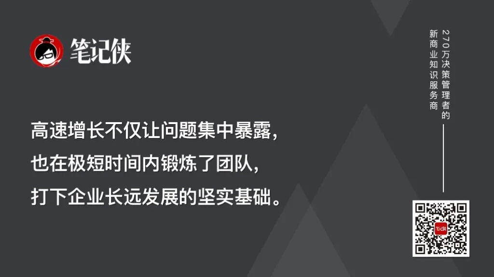
如果我们能快速修复这些问题、完成纠错rectify[ˈrektɪfaɪ] v. 纠正，对企业未来的长远发展而言，会打下非常扎实的基础。
泡泡玛特是2015年成立establish[ɪˈstæblɪʃ] v. 成立的公司，到2025年正好走过第十个年头，不算年轻企业了。
在行业里，一家企业能每年保持双位数增长increase[ɪnˈkriːs] n. 增长，就已经称得上优秀，能保持20%的增长，就是非常出色的表现。
但我们在成立的第十年，突然迎来了近200%的爆发式explosive[ɪkˈsploʊsɪv] adj. 爆发式的增长，整个运营团队的压力可想而知。
1.团队靠核心人就能驱动drive[draɪv] v. 驱动，而组织有自己的意志
2025年我最深的感受，就是反复提及mention[ˈmenʃn] v. 提及“组织”这个词。以前我们常说的是“团队”，而这一年，我对“组织”有了完全不一样的深刻理解comprehend[ˌkɑːmprɪˈhend] v. 理解。
创业初期，我们是一群志同道合的朋友，像梁山好汉一样，完成了从团伙到团队的蜕变transform[trænsˈfɔːrm] v. 蜕变。
但随着公司规模不断扩大，如今员工总数已经超过1万人，企业变成了一个像毛细血管一样复杂的组织体系system[ˈsɪstəm] n. 体系。这时候你会发现，很多问题已经不是靠创始人founder[ˈfaʊndər] n. 创始人个人，或者几位高管的能力和成长就能解决的了。
现在我们的业务遍布全球多个国家和地区，要面对不同的文化、法律法规、工作方式，部门与部门之间、业务线与业务线之间、国家与国家之间，都存在巨大的差异，也会出现很多意料之外的管理壁垒barrier[ˈbæriər] n. 壁垒。
管理方法也和团队阶段phase[feɪz] n. 阶段完全不同。
以前几个核心团队成员，有问题坐下来一起讨论，就能快速落地implement[ˈɪmplɪment] v. 落地实施解决；
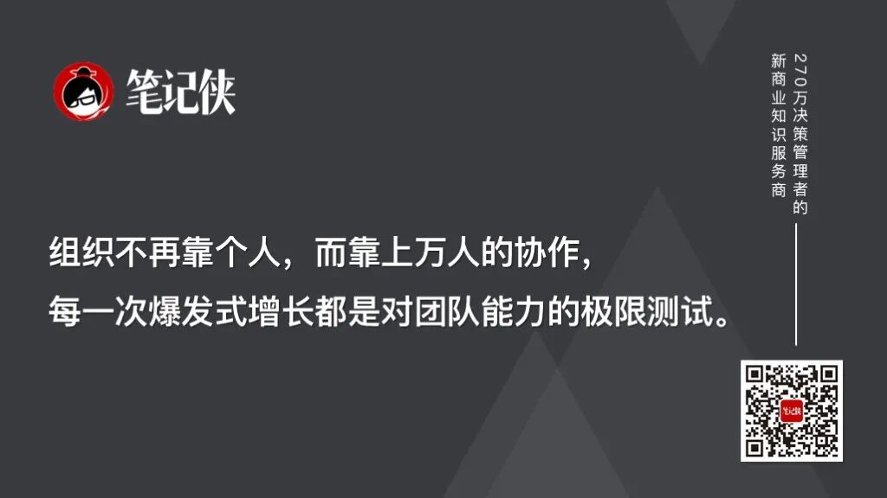
但当组织有了多层级的架构后，问题就不再是人和人的对接，而是一群人和另一群人的对接，是上万人的协作collaborate[kəˈlæbəreɪt] v. 协作与分工，这是完全不同量级的挑战，很多时候甚至已经超出了个人意志的范畴，组织开始有了自己的意志。
所以2025年，我们真正开始深度思考和探讨explore[ɪkˈsplɔːr] v. 探讨：组织该如何发展、遇到了哪些核心问题，以及该如何体系化地搭建组织架构，去应对未来的所有挑战。
2.业绩亮眼impressive[ɪmˈpresɪv] adj. 亮眼的的背后，是组织能力的跟不上
如果让我给2025年的表现打分，单看经营业绩performance[pərˈfɔːrməns] n. 业绩，我觉得可以打到90分甚至95分，这确实是一份非常出色的成绩单。但如果看组织管理management[ˈmænɪdʒmənt] n. 管理，我只能给到70分，反而2024年，我们的组织管理我能给到80分。
原因很简单，2024年企业的成长速度没有那么快，整个团队都能hold住局面situation[ˌsɪtʃuˈeɪʃn] n. 局面；但2025年的爆发式增长，让组织的问题集中暴露，我们发现有大量的能力需要补齐，团队里很多人都处在非常吃力strained[streɪnd] adj. 吃力的的状态。
举个例子，这就像我们原本经营一家小型医院，各个科室的主任都很出色，原本一天接待10个病人，大家游刃有余adept[əˈdept] adj. 游刃有余，医患双方都很满意。
但突然这家医院出名了，一天涌进来1000个病人，从运营数据上看，医院的发展非常好，但医生根本应付不过来，所有人都极度疲惫exhaust[ɪɡˈzɔːst] v. 疲惫，用户的体验也直线下降。
更关键的是，医院出名后，还会有大量疑难complicated[ˈkɑːmplɪkeɪtɪd] adj. 复杂的杂症的患者前来，很多病症是我们之前从未接触过的。
这时候要解决solve[sɑːlv] v. 解决的问题是全方位的：
如何应对暴增的客流量footfall[ˈfʊtfɔːl] n. 客流量？如何复制replicate[ˈreplɪkeɪt] v. 复制优秀医生的能力？如何提升elevate[ˈelɪveɪt] v. 提升全员的服务体验？如何引进recruit[rɪˈkruːt] v. 引进更专业的人才，解决那些从未见过的疑难问题？这就是我们当下最真实的处境predicament[prɪˈdɪkəmənt] n. 处境。
也正因如此，我们把2026年的关键词定为"保持专注，保持初心intention[ɪnˈtenʃn] n. 初心；本意"。这种时候我们绝不能分心distract[dɪˈstrækt] v. 分心，要花更多的精力在排兵布阵、搭建组织体系上。
3.企业最大的挑战challenge[ˈtʃælɪndʒ] n. 挑战，永远是组织本身
企业发展速度快的时候，一美遮百丑，亮眼的业绩会掩盖conceal[kənˈsiːl] v. 掩盖掉大量的问题。
当所有人都在为拉布布的爆火、为销售数据的增长鼓掌时，很容易沉浸immerse[ɪˈmɜːrs] v. 沉浸在这些表象的成功里，忽略掉底层的问题。如果不能及时解决这些问题，千里之堤溃于蚁穴，这些小问题终有一天会演变evolve[iˈvɑːlv] v. 演变成企业的大危机。
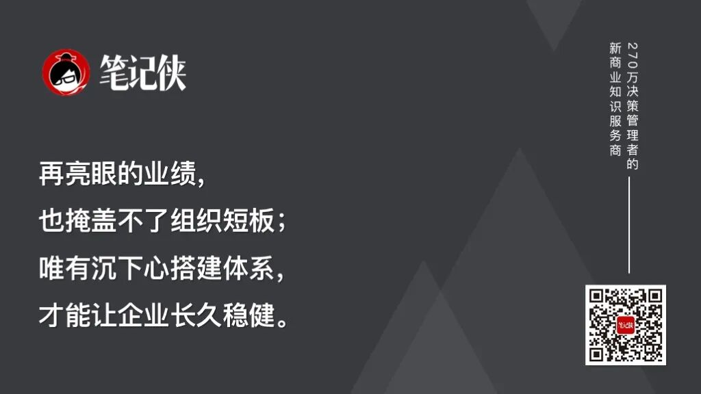
因为企业所有的成果outcome[ˈaʊtkʌm] n. 成果，都是人做出来的。不管是尊重时间、尊重经营，本质上essence[ˈesns] n. 本质都是尊重人、尊重团队的成长。
要让团队能沉下心来做事，拥有持续解决问题的能力，这才是企业最核心的根基foundation[faʊnˈdeɪʃn] n. 根基。
从0到1的兴奋，到对齐标准standard[ˈstændərd] n. 标准的阵痛
这几年，我和整个团队对海外业务的心态mindset[ˈmaɪndset] n. 心态，变化速度非常快。
最早的时候，我们对海外业务的定位positioning[pəˈzɪʃənɪŋ] n. 定位，就是一个0到1的过程。
那时候，只要能在海外市场发出声音，就已经很了不起remarkable[rɪˈmɑːrkəbl] adj. 了不起的了，在欧洲某个街角看到我们的门店，或者在某个柜台看到我们的产品，整个团队都会非常兴奋，因为我们的产品能在这个国家被买到了。
那个阶段，我们给海外团队更多的是掌声applause[əˈplɔːz] n. 掌声和鼓励，而非严苛的要求。
但从2025年开始，随着泡泡玛特品牌在全球范围内被快速认知，我们对海外业务的标准和要求也变得更高了，核心目标就是让海外的运营标准，快速和国内拉齐align[əˈlaɪn] v. 拉齐；对齐。这个转变transition[trænˈzɪʃn] n. 转变，给整个海外团队带来了非常大的压力。
毕竟之前收获的全是鲜花和掌声，大家为0到1的突破而庆祝celebrate[ˈselɪbreɪt] v. 庆祝，现在突然要面对高标准、严要求，还要快速补齐短板，整个过程是非常痛苦的。
海外门店和内地门店的运营，方方面面存在差距disparity[dɪˈspærəti] n. 差距。从门店工程的质量、装修完成的细节度，到产品陈列display[dɪˈspleɪ] n. 陈列、商品管理、服务运营，全维度都有差距。
2025年，我们海外overseas[ˌoʊvərˈsiːz] adj. 海外的业务收入162.7亿元，同比增长291.9%，其中美洲市场同比增长748.4%，欧洲市场同比增长506.3%，报表上的增长数据非常亮眼。
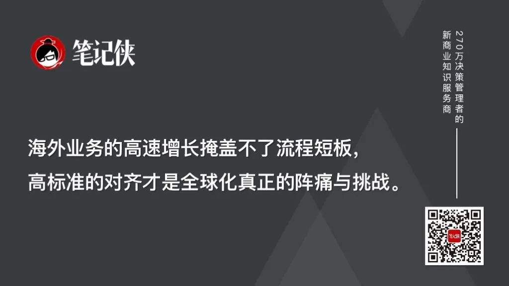
但当你到当地实地查看inspect[ɪnˈspekt] v. 查看就会发现，虽然数字好看，但整个业务交付的全流程，其实存在大量的问题。而高速增长的业绩，把这些问题全都掩盖veil[veɪl] v. 掩盖了。
这么多年过去，全球范围内关于我们的舆论discourse[ˈdɪskɔːrs] n. 舆论，始终是两极分化的。一直有一群人，到现在都没有真正看懂泡泡玛特，公司也始终处在争议controversy[ˈkɑːntrəvɜːrsi] n. 争议之中。
每年都有人觉得，我们像是从石头里蹦出来的一样，好奇curious[ˈkjʊriəs] adj. 好奇的怎么突然就出现了这样一家公司，拉布布怎么突然就火了。
大家的讨论，永远围绕着这些表层的热点，争论debate[dɪˈbeɪt] n. 争论拉布布明年会不会不火了，有人看多有人看空，但从来没有人去讨论IP背后的世界观、背后的艺术家、背后的设计逻辑，以及我们对IP的系统化运营能力。大家永远只通过表象facade[fəˈsɑːd] n. 表象；表面，来决定对这家公司看多还是看空。
就拿“IP没有故事”这件事来说，以前我也认同identify[aɪˈdentɪfaɪ] v. 认同，如果有电影、有完整的故事线，能让IP的世界观更丰富，或许能延长IP的生命周期，让IP更有厚度。
但最近我有了新的思考reflect[rɪˈflekt] v. 思考：如果电影类的IP是电影明星，那我们的IP会不会是体育明星？这完全是两个赛道arena[əˈriːnə] n. 赛道；领域。
比如电影赛道有小李子，而拉布布就是体育sports[spɔːrts] n. 体育赛道的梅西，两者本就不是一类东西。甚至体育明星的商业价值worth[wɜːrθ] n. 价值，要远远超过电影明星。总不能因为梅西很成功success[səkˈses] n. 成功，就非要让他去拍一部电影吧？
所以，我们做电影，核心core[kɔːr] n. 核心不是为了靠电影票房获得成功，而是希望通过电影，把我们想要表达的IP内核、价值观都放进去。电影工业industry[ˈɪndəstri] n. 工业能帮我们集中产出大量优质的IP元素。
比如更精良的拉布布相关音乐、更完整的价值观设计，这些内容不仅能用于电影本身，还能分散赋能empower[ɪmˈpaʊər] v. 赋能到乐园、产品等各个业务环节。
就像迪士尼，大家听到《冰雪奇缘》的音乐，就会产生强烈的情感共鸣resonate[ˈrezəneɪt] v. 共鸣，这和电影本身已经没有直接关系了，是电影工业帮我们创造了这些能持续产生价值的元素。
我们现在的业务链条chain[tʃeɪn] n. 链条，需要大量更优质的IP元素，而电影就是帮我们集中产出这些内容的最好方式之一。
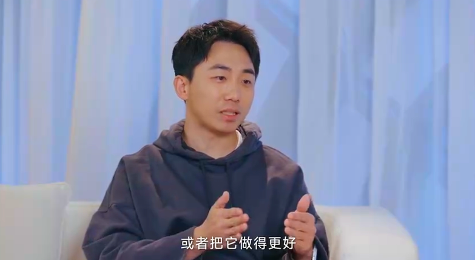
但2025年来看，我们内部internal[ɪnˈtɜːrnl] adj. 内部的的电影和游戏业务，做得都不够成功。我们也在深刻反思introspect[ˌɪntrəˈspekt] v. 反思，但我觉得这是企业拓展新业务的必经之路。毕竟电影和游戏都是极度内卷的行业，我们作为行业新人newcomer[ˈnuːkʌmər] n. 新人，该交的学费必须要交。
至于要不要继续做，我最近有个很形象的比喻metaphor[ˈmetəfər] n. 比喻：
如果把企业的业务布局比作海陆空三军，我们现在拥有战斗力很强的陆军，也就是我们深耕cultivate[ˈkʌltɪveɪt] v. 深耕；培育多年的线下业务；
我们新尝试的甜品、家电等新品类category[ˈkætəɡɔːri] n. 品类，就像海军，是我们向着星辰大海，探索未来的更多可能性；而游戏和电影业务，就像空军，它的辐射radiate[ˈreɪdieɪt] v. 辐射范围会更远，能触达更多用户。
最理想ideal[aɪˈdiːəl] adj. 理想的的状态，当然是陆军、海军、空军都能全面发展。现在我们陆军的优势advantage[ədˈvæntɪdʒ] n. 优势很明显，接下来也会持续探索，希望有一天能把海军和空军的短板补上来。
2025年，我最专注的事情，是回到return[rɪˈtɜːrn] v. 回到IP本身。
首先就是要做取舍prioritize[praɪˈɔːrətaɪz] v. 取舍；优先排序、做聚焦。
以前我们可能同时做20个IP，现在我们会砍掉10个没那么重要的，把资源resource[ˈriːsɔːrs] n. 资源向头部IP集中。
2025年，除了LABUBU之外，我们还有SKULLPANDA、MOLLY、DIMOO等6个IP营收均超过20亿元，17个艺术家IP营收破亿，已经形成了稳定的IP商业化矩阵matrix[ˈmeɪtrɪks] n. 矩阵。
对于拉布布、星星人、MOLLY、SKULLPANDA这些最头部的IP，我们要想清楚它们未来的发展路径，匹配match[mætʃ] v. 匹配对应的资源，规划好每一步的动作。
把这件事做透、做好，远比再去签10个新IP的价值和意义significance[sɪɡˈnɪfɪkəns] n. 意义大得多，这就是我们说的“更专注”。
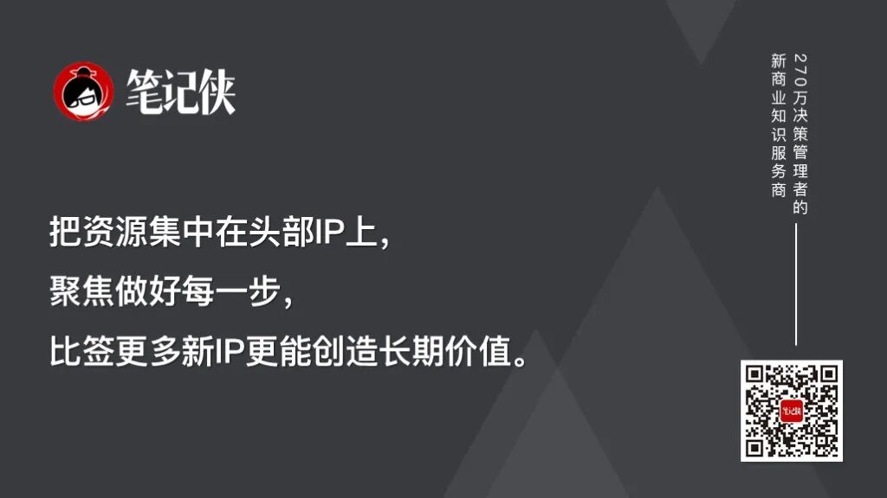
3.拉布布爆火后，我们一直在“灭火contain[kənˈteɪn] v. 遏制”，而非过度消耗
我们2025年做的很多动作，都是在为拉布布赋能，而核心的赋能方式，是做减法subtraction[səbˈtrækʃn] n. 减法，而非做加法。
大家能看到，在拉布布最火的时候，我们没有过度消耗consume[kənˈsuːm] v. 消耗它：
我们把很多2025年规划的拉布布新品，都推迟postpone[poʊˈspoʊn] v. 推迟到了2026年，不希望给消费者一种“拉布布一直在出新品”的疲劳感；
我们暂停pause[pɔːz] v. 暂停了它几乎所有的线下营销，也暂停了大量的对外IP授权合作，全程都在做减法。
大家没有看到像很多爆红IP那样，拉布布的授权license[ˈlaɪsns] n. 授权满大街都是，也没有快速消耗IP价值的行为。
因为我们本身是产品product[ˈprɑːdʌkt] n. 产品公司，我们很清楚，
好的授权能为IP赋能，但不合适的、大众化mainstream[ˈmeɪnstriːm] adj. 大众化的的授权，反而会严重消耗IP。
所以我们会非常谨慎cautious[ˈkɔːʃəs] adj. 谨慎的地筛选，只选择能和IP相互赋能的合作品牌与合作方式。
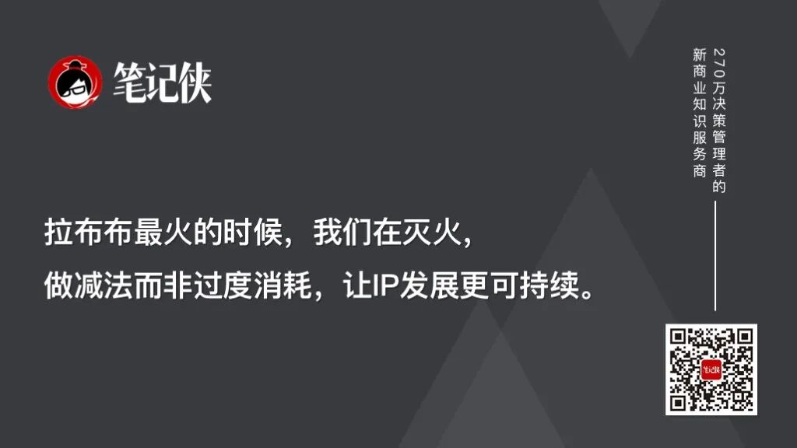
所以，在拉布布最火的那段时间，我们整个团队都在“灭火”，停掉很多拉布布相关relevant[ˈreləvənt] adj. 相关的的活动和IP授权。
我们不希望它一下子火过头，这其实是一个反常识counterintuitive[ˌkaʊntərɪnˈtuːɪtɪv] adj. 反直觉的的动作。因为泡泡玛特的产品，不是真正意义上的大众mass[mæs] n. 大众消费品，它是非实用、非刚需的产品，单价也并非大众快消品的级别。
我们每年服务serve[sɜːrv] v. 服务的用户大概是几千万人，但突然有20亿人知道了这个IP，绝大多数人是我们暂时没办法服务的。其中有很多人并非真正喜欢拉布布，只是来看热闹、跟风fad[fæd] n. 跟风；一时流行购买。
我们一直在做平衡balance[ˈbæləns] n. 平衡，希望能让真正喜欢、真正需要的用户能买到产品，让IP的发展更可持续、更健康。
4.泡泡玛特的核心能力，是持续sustain[səˈsteɪn] v. 持续打造爆款IP的体系化能力
我觉得我们现在已经搭建了相对relatively[ˈrelətɪvli] adv. 相对地成熟的IP运营基础和体系化框架。这就像抖音这样的平台，今天大家讨论的是这条视频、这个博主blogger[ˈblɒɡər] n. 博主很红，但明年一定会有新的爆款、新的红人出现。平台platform[ˈplætfɔːrm] n. 平台的价值，就在于拥有持续打造爆款的能力。
很多人一直在纠结obsess[əbˈses] v. 纠结：到底谁在买拉布布？为什么会一直买？两年后还会不会喜欢？
但他们忽略了一个核心点：当用户通过我们的产品和服务，获得了独一无二unique[juˈniːk] adj. 独一无二的的快乐和美好体验，这种需求就会是持续的。
我们的体系化能力，能持续为用户提供这种价值value[ˈvæljuː] n. 价值，这才是最核心的。
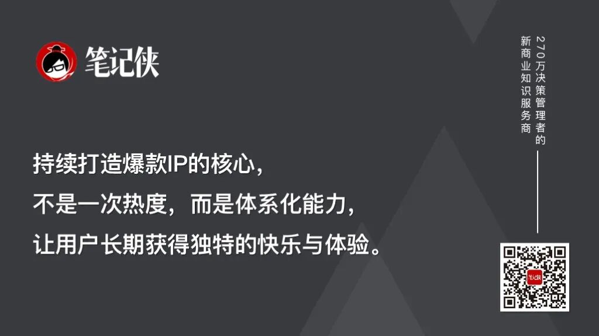
回过头看我们每年的产品，能非常清晰地看到，从2016年推出launch[lɔːntʃ] v. 推出第一代产品到现在，我们的产品力一年比一年强。我们一直在通过迭代iterate[ˈɪtəreɪt] v. 迭代产品，去刺激新的消费需求，也通过成熟的IP运营体系，去唤醒很多有潜力的老IP。
比如碧琪，这个IP已经沉寂dormant[ˈdɔːrmənt] adj. 沉寂的了好几年，甚至我们都觉得它可能会一直失落下去。
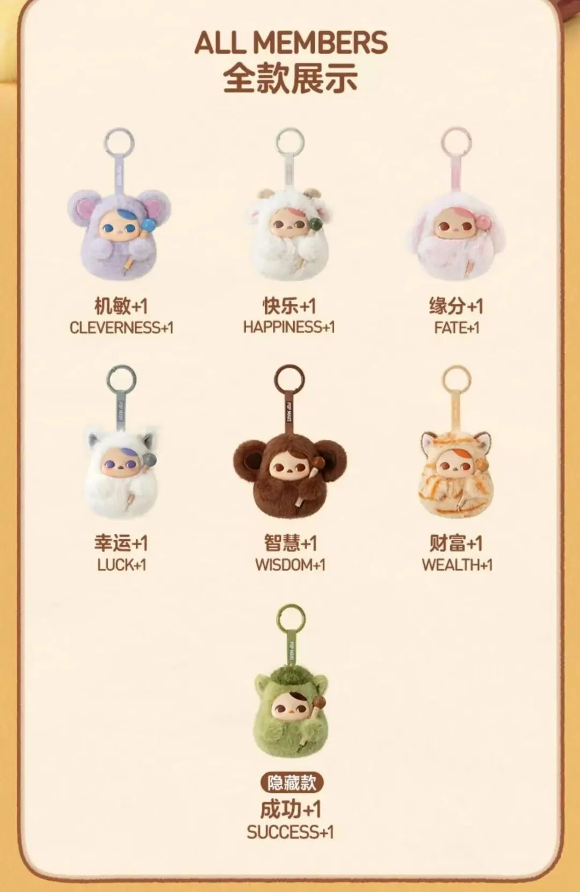
但我们通过新的运营方式，打造了“敲木鱼的碧琪”这个产品，在小红书上非常受欢迎，用年轻人喜欢的方式，让这个IP重新焕发revive[rɪˈvaɪv] v. 焕发；复苏了生机。
这就是我们体系化运营operate[ˈɑːpəreɪt] v. 运营能力的价值。
对标的思考、AI时代的布局deploy[dɪˈplɔɪ] v. 布局与不可替代的价值
我觉得大家不应该只站在单价、稀缺性scarcity[ˈskersəti] n. 稀缺性的角度，去理解我们对奢侈品牌的借鉴。比如我们邀请吴悦进入董事会，包括我们整体的战略strategy[ˈstrætədʒi] n. 战略规划，核心都是围绕用户的消费本质展开的。
消费的核心，是满足用户的满足感和存在感，尤其是现在绝大多数非刚需的消费，本质上都是在提供情绪emotion[ɪˈmoʊʃn] n. 情绪价值。
我们做的正是提供情绪价值的非刚需产品，所以核心要思考的，就是如何更好地为用户提供满足感satisfaction[ˌsætɪsˈfækʃn] n. 满足感和存在感，这也是我们从优秀品牌身上学习的核心。
每个品牌都要有自己的“看家本领expertise[ˌekspɜːrˈtiːz] n. 专长；看家本领”。
每年60%的精力，放在打磨polish[ˈpɑːlɪʃ] v. 打磨看家的核心产品上，不需要做太大的创新，而是要不断完善、把它做到极致；剩下40%的精力，用来做持续的创新innovate[ˈɪnəveɪt] v. 创新。
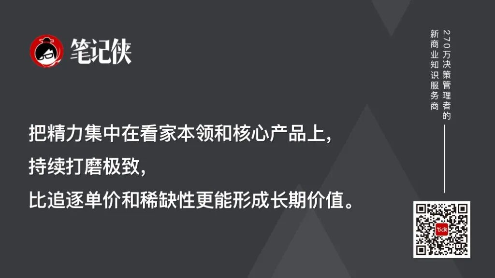
就像Nike有它的经典classic[ˈklæsɪk] adj. 经典的款球鞋，Chanel、爱马仕有它们的经典款包袋，这些品牌都是通过产品，持续塑造品牌IP和品牌内核，这个理念是非常值得我们学习的。
我们也是通过专注、持续的IP运营，形成了企业的基本盘，现在更要想清楚，哪些是我们的看家本领、哪些是核心IP和核心品类，如何平衡经典的固化consolidate[kənˈsɑːlɪdeɪt] v. 固化；巩固与持续地创新，这比单纯追求单价和稀缺性要重要得多。
但我们现在做的事情，是前人没有做过的，是一个全新的品类，没有现成的路径可以照搬copy[ˈkɑːpi] v. 照搬。
所以我们会花更多的精力去独立思考，去探索属于我们自己的路，尤其是新时代下的内容化形式，不一定非要局限confine[kənˈfaɪn] v. 局限在传统的两小时电影里，它可以是社交媒体的短视频，也可以是乐园里人偶的互动，形式是为内容和IP服务的。
我们一贯的原则principle[ˈprɪnsəpl] n. 原则是，绝不会为了蹭热度、追风口去做事情，除非我们认定这件事能真正解决用户的问题，能提供不可替代的价值。
2.AI时代，我们更要深耕极致ultimate[ˈʌltɪmət] adj. 极致的的线下体验
10年之后，用户的需求一定会出现两极分化diverge[daɪˈvɜːrdʒ] v. 分化：
一个方向是追求极致的线上体验，就像《头号玩家》里描绘depict[dɪˈpɪkt] v. 描绘的那样，AI的诞生，一定会让线上的沉浸感和体验感，比现在提升无数个量级。
而与之对应correspond[ˌkɔːrəˈspɑːnd] v. 对应的，当线上体验足够极致的时候，大家对线下体验的要求，也一定会变得更高。
只有更极致的线下体验，才能吸引attract[əˈtrækt] v. 吸引用户从线上走到线下。
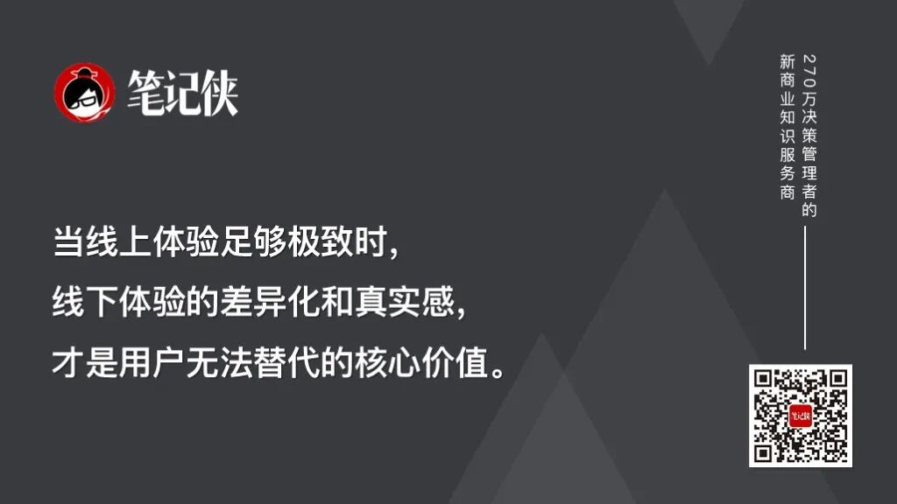
对我们而言，我们已经拥有了非常强的线下运营能力，所以现在我们更关注concentrate[ˈkɑːnsntreɪt] v. 关注的，是如何打造未来更极致的线下体验。
这也是为什么，比起AI，我们现在会把更多的精力投入到线下乐园的建设中，因为这是我们更有机会做好、做出差异化differentiate[ˌdɪfəˈrenʃieɪt] v. 差异化的事情。
当你打开手机，沉浸在虚拟virtual[ˈvɜːrtʃuəl] adj. 虚拟的世界里的时候，你能获得极致的线上精神体验；
但当你放下手机，回到真实的物理世界，你依然需要现实中的陪伴accompany[əˈkʌmpəni] v. 陪伴，更舒服的沙发、更柔软的抱枕、抱起来手感极佳的毛绒玩具，这些都是物理世界里不可替代的真实体验，也是我们的产品能持续为用户提供的核心价值。
*文章为作者独立观点，不代表笔记侠立场。

今天我们深嵌于一个新的时代，科技、经济、哲学、政治都在经历持续变革和深刻重塑的复杂社会与商业环境之中，而真正困住绝大多数人的核心挑战，恰恰是：我们的认知框架、组织形态和行动逻辑，还停留在“前全球化时代”“前AI时代”。
面向新全球化时代、AI新时代，笔记侠PPE（Philosophy哲学、Politics政治学、Economic经济学，三学科交叉培养体系）课程，正是为理解这样的复杂系统而生：
在这里，你能理解以AI为核心的科技经济和智能商业、理解AI哲学、理解文明进程与哲学意义、理解新格局下的国际贸易与经济政策、理解国际政治与全球治理模式。
这，正是第五代企业家应有的一套完整的“认知操作系统”。
驾驭技术、洞察世界、扎根中国、修炼心力，在应对时代重重挑战中寻找属于你的决策底牌。穿越变革的旧世界，找到时代的新大陆，从【PPE：未来3年和AI时代的决策底牌】开始。
笔记侠PPE课程26级招生即将截止，5月16日开课，现仅剩最后5个名额。
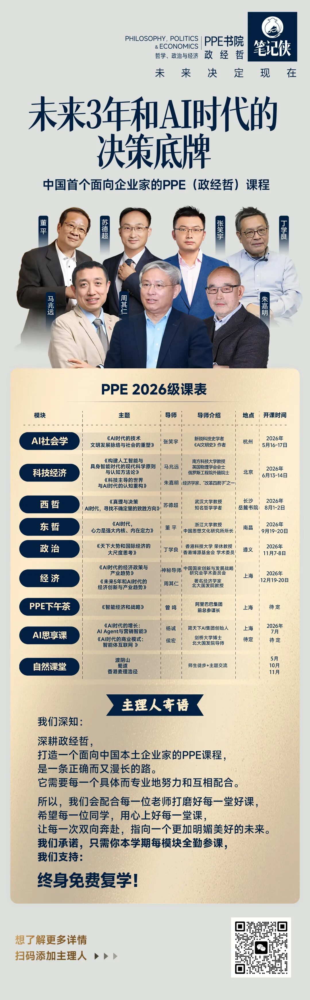
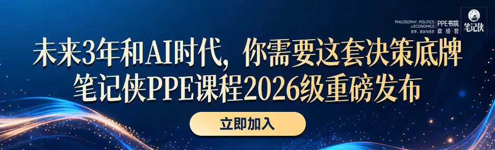
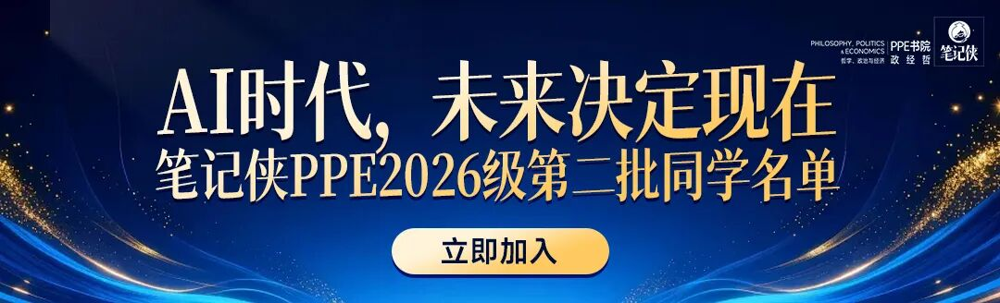
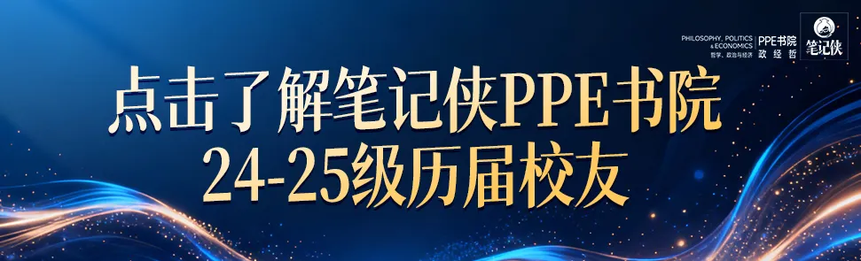

这套迭代方法论，是10倍增长的入场券
5月，到良渚探寻AI文明的底牌丨笔记侠PPE课程预告